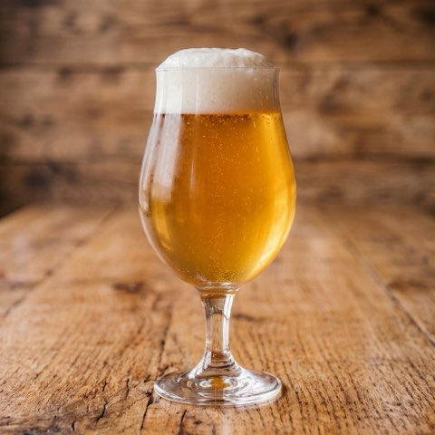
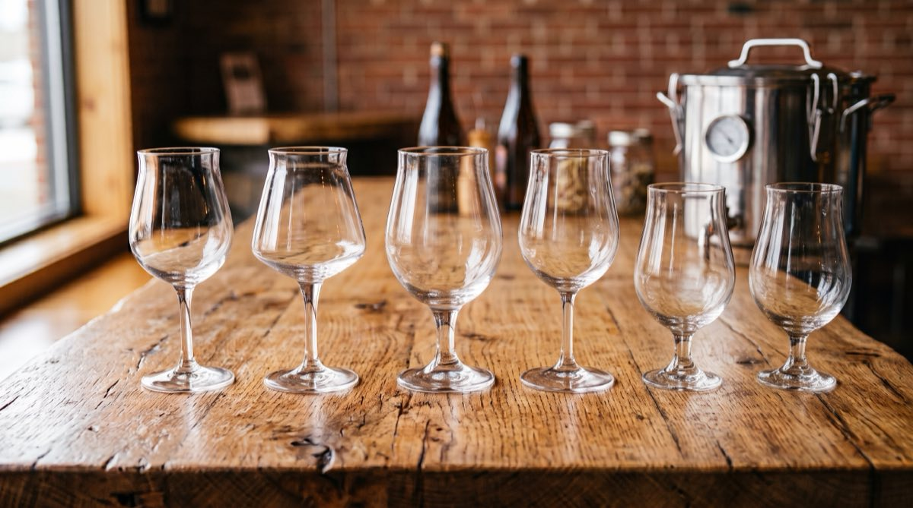
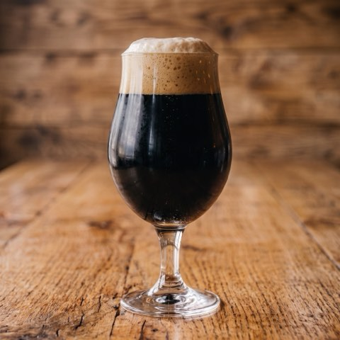
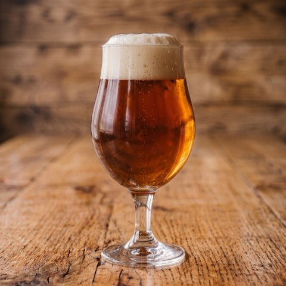
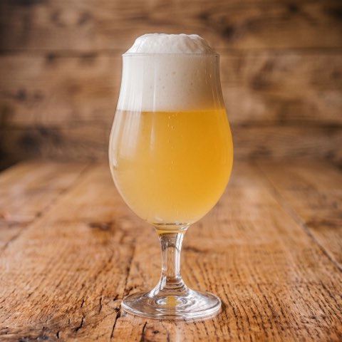
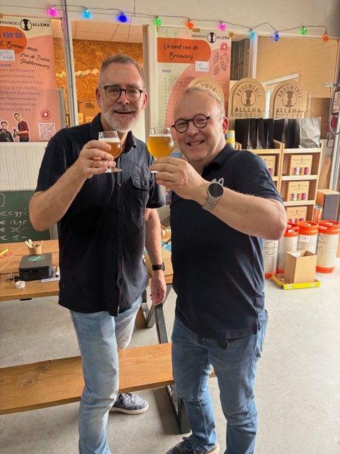

Saison · [X,X]%
[Naam]
[Eén zin: waar komt dit recept vandaan?]
Concept. Alles tussen [rechte haken] moet nog ingevuld worden.

De eerste ronde · [DATUM]
Dat bepaal jij. Vier proefbrouwsels, één avond in onze brouwerij in Wijthmen, en één stem per deelnemer. Het bier met de meeste stemmen gaat op groot formaat de ketel in. Daarna kies je zelf hoeveel je ervan afneemt — en daarmee brouwen we het.
Reserveer je plek — [€ XX]
via de CO&CO-webshop
[X] plekken beschikbaar · vanaf 18 jaar
Eén stem per deelnemer, uitgebracht aan het eind van de avond.
Een beperkt aantal deelnemers, zodat je stem gewicht heeft.
Vier brouwsels, uitleg bij elk, en tijd om erover te praten.
Aan het eind van de avond telt de groep de stemmen.
Small, medium of large. Samen financieren jullie het brouwsel dat je zelf hebt gekozen.

[Eén zin: waar komt dit recept vandaan?]

[Eén zin over dit bier]

[Eén zin over dit bier]

[Eén zin over dit bier]
Na de stemming kies je hoeveel je van het winnende bier afneemt. Die bestellingen samen betalen het brouwsel — daarom heet het Bierfunding. Je betaalt pas als de keuze gemaakt is en je weet welk bier het wordt. Het brouwen zelf gebeurt op groot formaat bij Brouwerij Allema in Zwolle.
[Voor wie het wil proberen — één avond met vrienden.]
[Een kratje voor thuis, en genoeg om weg te geven.]
[Voor de echte liefhebber, of om te delen met je team.]
Er is een minimum nodig om de ketel te vullen. [Zin over wat er gebeurt als dat minimum niet gehaald wordt — brouwen we alsnog, of gaat de ronde niet door?] Wat we vastleggen staat op de voorwaardenpagina.

Twee brouwers, één hobbybrouwerij in Wijthmen, en [X] jaar recepten uitproberen op vrienden en familie. Bierfunding is wat daaruit gekomen is: in plaats van zelf te bedenken wat er in de ketel gaat, laten we dat over aan de mensen die het gaan drinken.
Dit is onze eerste ronde. Wie er nu bij is, bepaalt mee hoe Bierfunding eruit gaat zien — en drinkt het eerste bier dat hieruit komt.